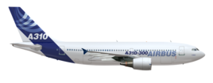

| |
| |
The Airbus’ A310 is the most profitable jetliner in its class, with lower operating costs and better economy than any other airliner in the 200-seat category. Since 1983, the aircraft has provided maximum flexibility for operators – flying short-, medium- and extended-range routes with great reliability.
The A310 accommodates 220 passengers in a two-class configuration with 20 first-class and 200 economy-class seats. The aircraft itself has a range of up to 5,200 nautical miles. During its production run, orders for this wide body jetliner reached 255, with a large majority of them still in operation around the world.
Unique innovations used throughout the A310 lead to improved safety, enhanced operational efficiency and reduced costs for operators. Examples are fully-digital avionics; electrically-signalled flaps, slats and spoilers; a new-generation auxiliary power unit; and an active centre-of-gravity control system. The A310’s two engine options – General Electric’s CF6-80C2 and the PW4000 from Pratt & Whitney reduce fuel burn, along with lower noise levels and Carbon dioxide emissions.
| Category | Data |
|---|---|
| Manufacture date | 1982 |
| Range | 8,050Km |
| Seating Arrangement | 220 persons (2 classes) |
| Max Payload | 26.7 (21.6) tonnes |
| Engines | PW4000x2 or CF6-80C2x2 Thrust Range:230-260kN |
| Wingspan |  43.90m 43.90m |
| Height |  15.80m 15.80m |
| Overall Length | 46.66m |